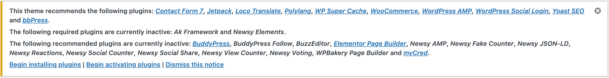
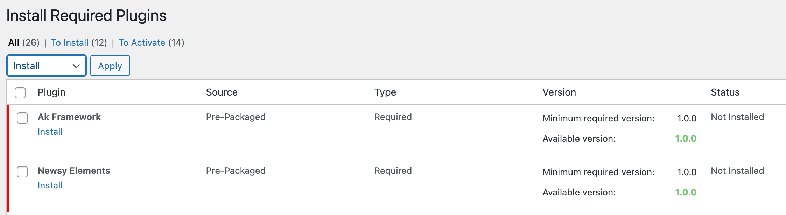
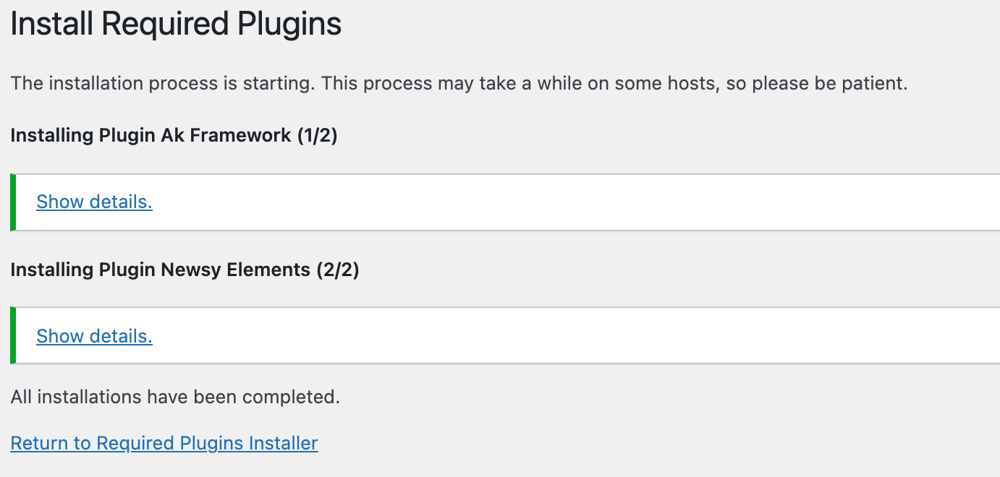
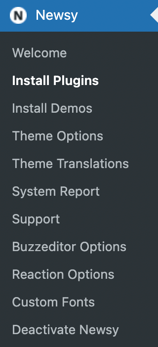
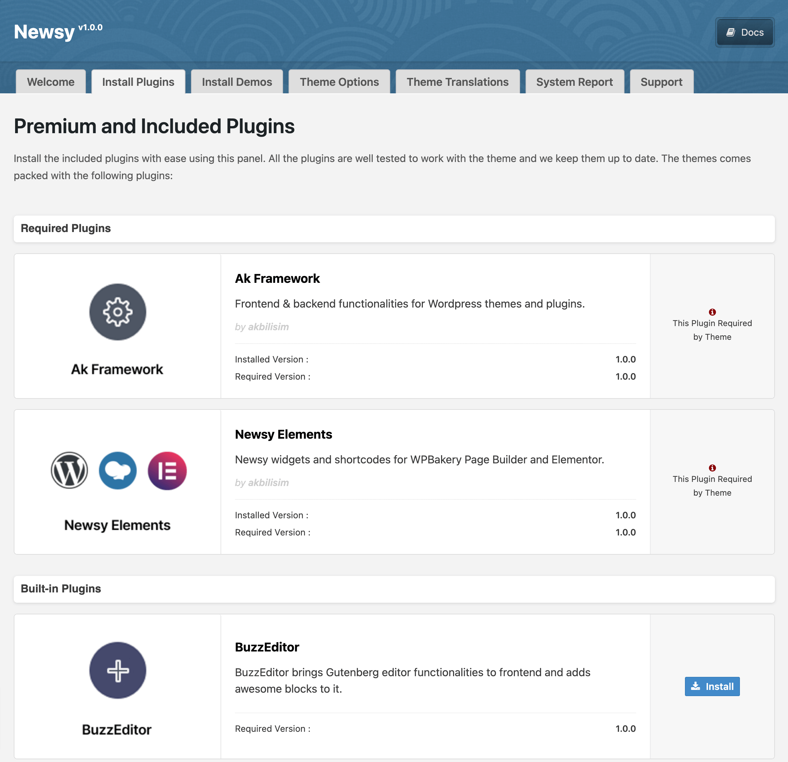

Plugins is a WordPress plugin that greatly expands the possibilities of Newsy. Newsy is bundled with several plugins such as Built In Plugins, Supported Plugin, and the most popular Recommended Plugins. All plugins are available for free including their future updates with Newsy Theme.
How to Install Required Plugins?
Right after you finish installing & activating Newsy, you will need to install and activate Required Plugins for this theme which is a mandatory step to make Newsy fully functional. Here’s the list of all required plugins that you need to install :
- Ak Framework (Newsy Core)
- Newsy Elements (Content Blocks & Widgets for Newsy)
To install required plugins via TGM Plugin Activation:
-
Please click Begin activating plugins link in
prompted box or go to Appearance →
Install Plugins.

-
If you are already on the Plugin Dashboard you
just need to choose all required plugins. Then hit the
Install button to install and wait until
installation process finish.
 -
After installation process finished, you will be prompted to
return into Plugin Dashboard by hit
Return to Required Plugins Installer
button.
 - Finally, you can activate the plugin by clicking Activate button.
How to Install Recommended Plugins?
Beside required plugins, you might want to install built in and recommended plugins for Newsy in order get specific functionality for your site.
You can simply activate specific plugin that you need for your
website and deactivate them if you don’t need it. You can increase
your website performance by activating necessary plugins only.
There
are two ways to install recommended plugins:
1. Installation via Newsy Plugin Dashboard
Install the included plugins with ease using this panel.
-
Go to Newsy → Install Plugins page.

-
That's all! In this page, you can install & activate your
preferred plugins with one-click.

2. Installation via TGM Plugin Activation
- To install plugin via TGM Plugin Activation, please go to Appearance → Install Plugins
- If you are already on the Plugin Dashboard you just need to choose specific plugin that you want to install. Then hit the Install button to install and wait until installation process finish.
- After installation process finished, you will be prompted to return into Plugin Dashboard by hit Return to Required Plugins Installer button.
- Finally, you can activate the plugin by clicking Activate button.